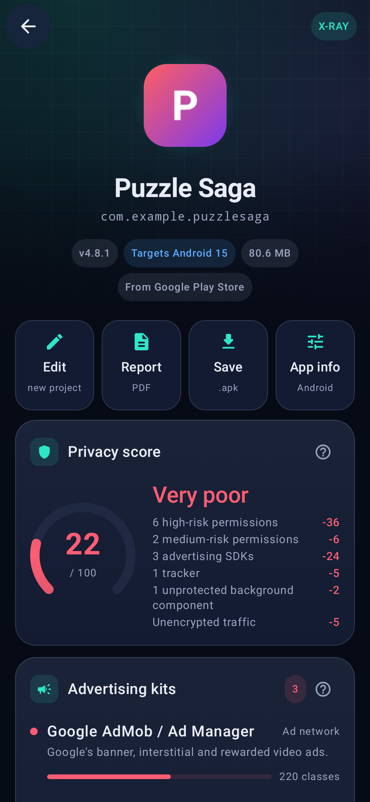
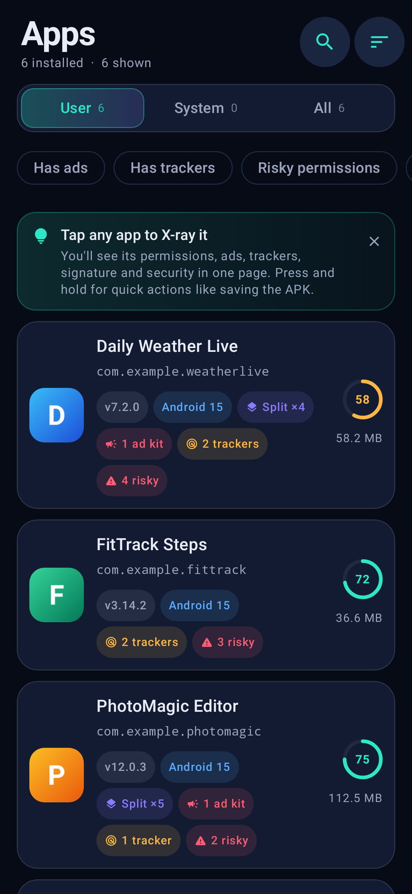
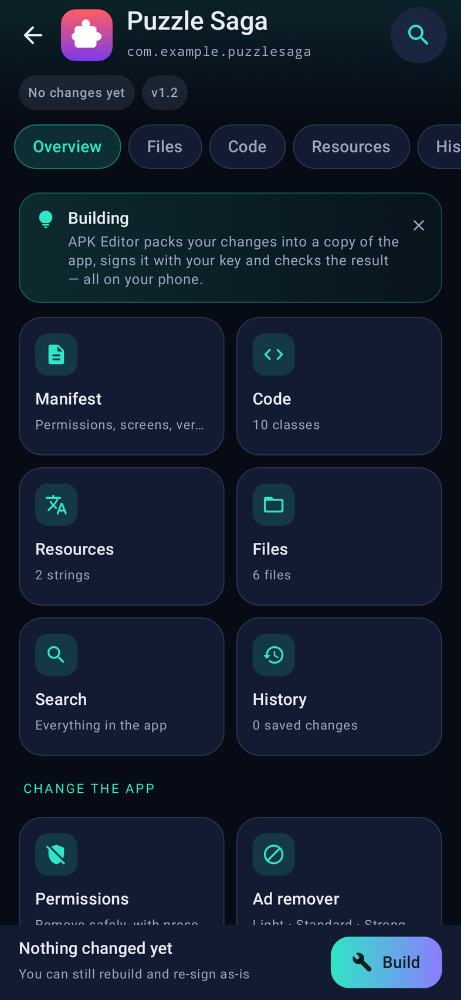
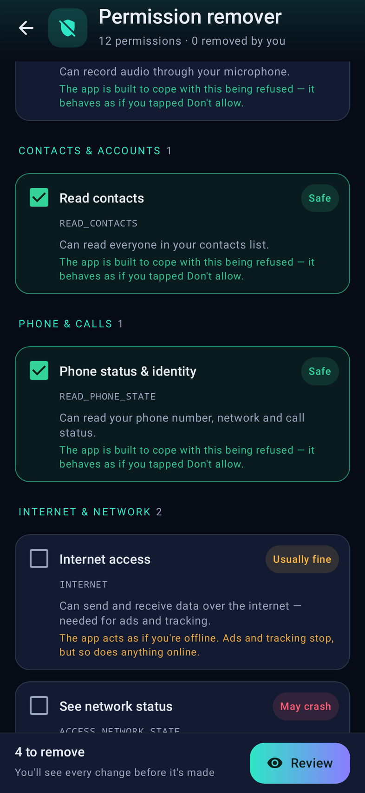
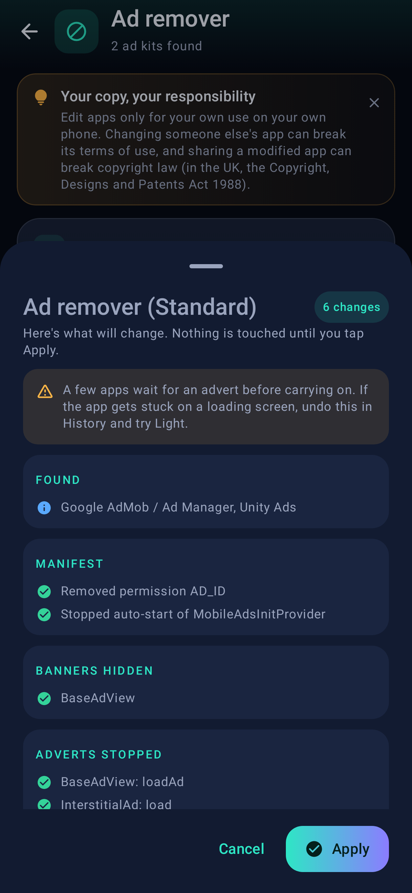
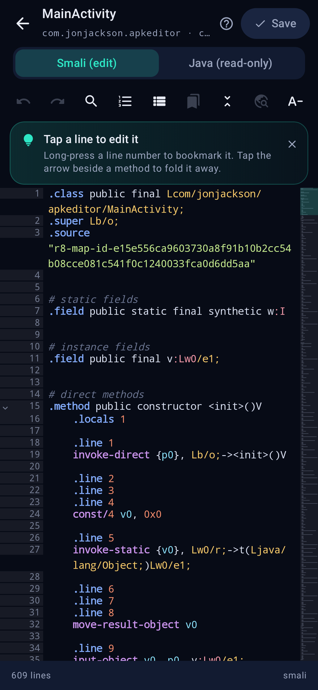
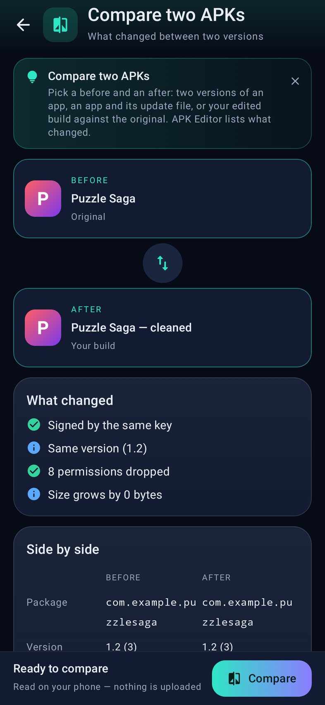
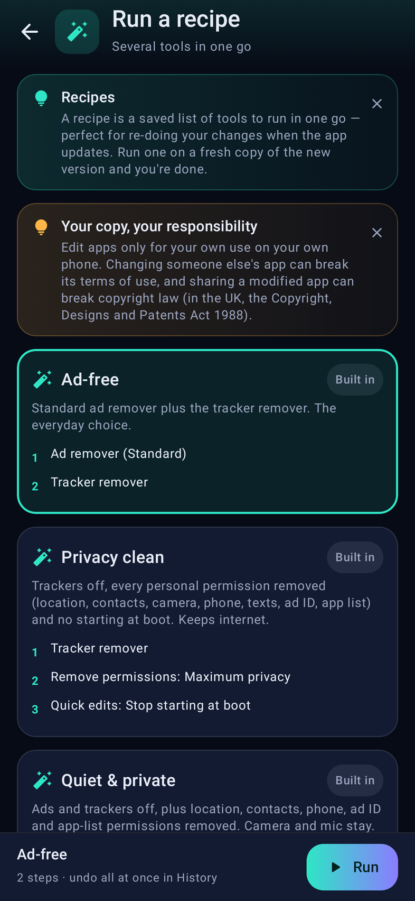
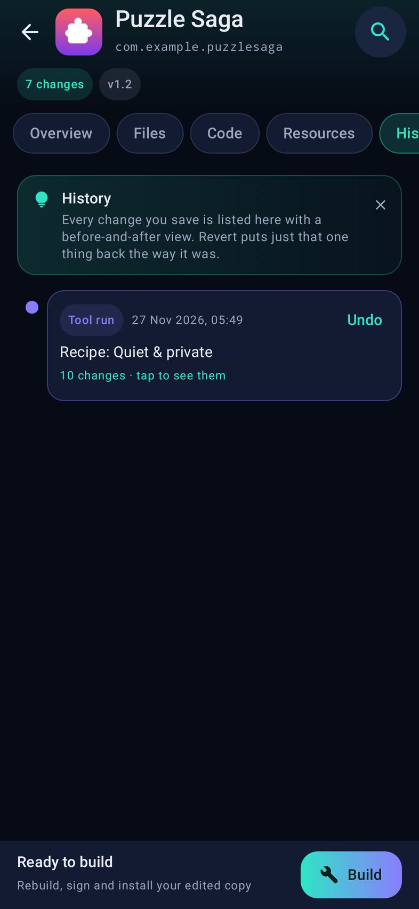
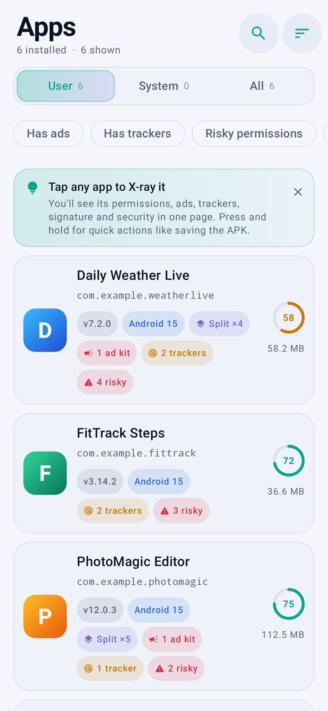

See inside any app. Then make it yours.
APK Editor opens up the apps on your phone: what they can reach, which advertising and tracking kits they carry, how they are signed and what every file inside does. Then it lets you change them: the manifest, the code, the text and colours, the icon and name, any file at all.
One tap takes out permissions you never wanted, switches off adverts and trackers, or clones an app so a second copy runs beside the first. APK Editor rebuilds, signs and installs your copy, keeps the original safe and lets you undo anything. It has no internet access, so nothing about your apps ever leaves your phone.
APK Editor changes apps on your own phone. Edit only apps you have the right to change, for your own use. What the law says
Google Play Protect may block APK Editor as a "harmful app". It does this to apps that can change and reinstall other apps, which is what APK Editor is for. APK Editor cannot go online and sends nothing anywhere. Why, and how to install it.
- Version 1.0.1
- Android 10 or later
- 10.0 MB
Free, with nothing to unlock. No adverts, no account with the developer, no tracking. Compare or read the release notes.
Chrome may say the file might be harmful. It shows this for app files that do not come from Google Play. Choose Download anyway.

- No internet accessAPK Editor cannot go online at all.
- No advertsNone in the app and none on this site.
- Nothing to buyEvery feature is free, with no trial and no subscription.
- No accountNothing to sign up for.
A look inside
These are the real screens, drawn from the app's own code with made-up apps. Swipe or scroll sideways to see them all.









How it works
APK Editor reads the app's own files, keeps a private copy, applies your changes and builds a new app, all on your phone.
Look
Tap any app, or open an APK, APKS, XAPK or APKM file. The X-ray shows what it can reach and what is built into it.
Change
Tap Edit to make a private copy. Use the tools, or edit the manifest, code, text and files yourself. Every change can be undone.
Build
Tap Build. APK Editor rebuilds the app, signs it with your own key, checks the signature and installs it.
Everything is in, and all of it is free
Nothing below is held back for a paid tier, because there is no paid tier.
Look inside
- App X-ray
- A privacy score with the reasons, every permission in plain English, granted or not, and the parts other apps can start.
- Ads and trackers found
- 90 known advertising, analytics and crash-reporting kits found in the app's code, offline.
- Signature and security
- Signing certificate, v1 to v4 signature schemes, debug mode, unencrypted traffic, backup and target Android checked.
- Compare and report
- Compare two versions to see what an update added, and save the X-ray as a tidy PDF security report.
Edit anything
- Manifest and code
- The manifest as readable XML, and every class in smali with a full code editor: colours, folding, mini-map, find and replace, go to definition.
- Text, colours and files
- Every string in every language, colours with sliders, switches and numbers. Replace, add or delete any file, view images and hex.
- Icon and name
- A new name in every language and a new icon from any picture, written to every screen density and to modern adaptive icons.
- Clone
- A new package name so a second copy installs next to the original, with providers, permissions and the code updated to match.
Clean it up
- Permission remover
- Take out permissions with presets such as Location, Contacts and Advertising ID, each rated Safe, Usually fine or May crash first.
- Ad remover
- Light, Standard or Strong: hides banners, stops full-screen and video adverts from around 20 ad networks, and shows every change first.
- Tracker remover
- Switches each analytics kit's own off switch, removes tracking-only parts and silences the calls that send events.
- Recipes
- Run several tools in one tap: Ad-free, Privacy clean, Quiet & private, Second copy, or your own. Export them as small files.
Build and keep
- Rebuild, sign, install
- v1, v2 and v3 signatures, split apps signed together, signature conflicts explained, and the original never touched.
- History and undo
- Every change with a before-and-after view. Undo one change, or a whole tool run at once.
- Your own keys
- A key made for you, or your own .jks, .p12 or .bks imported. Back up keys as password-protected .p12 files.
- Quick edits and more
- Version, lowest Android, screen rotation, split screen, start at boot, backup; split-APK merging; optional app lock.
Private by design
No internet at all
APK Editor does not hold Android's internet permission. It cannot send anything anywhere.
Nothing about you
No adverts, no account, no analytics and no crash reports. Your apps, projects, keys and reports stay on your phone.
Keys locked away
Signing keys are stored encrypted, sealed by your phone's own secure hardware, and never leave the app unless you export them.
Use it within the law
APK Editor is for looking inside apps and changing your own copies: your own apps, open-source apps, and apps whose licence lets you modify them for personal use. It does not remove licence checks, in-app purchase protection or signature checks.
- Copyright, Designs and Patents Act 1988. Apps are protected by copyright. Making an adapted copy of someone else's app without permission can infringe copyright (sections 16 and 21), getting round copy-protection is restricted (sections 296 to 296ZF), and selling, sharing or distributing modified copies can be a criminal offence (section 107). Keep your changes to your own phone.
- Computer Misuse Act 1990. Using a changed app to get into accounts, services or data you are not entitled to, or to interfere with someone else's device, is a crime (sections 1 to 3A). Never put an edited app on anyone else's phone without their knowledge.
Laws differ in other countries. If you are not in the UK, the rules where you are apply. Read the terms of use.
Installing and updating
APK Editor is not on Google Play, so your phone asks a couple of extra questions the first time.
Download the app file
Tap Download on your phone. The file is called APKEditor.apk and is about 10.0 MB. If Chrome says the file might be harmful, choose Download anyway. First tick the box to say you will use the app within the law.
Allow the install
Open the file. The first time, Android asks you to allow your browser to install apps. Allow it, go back and tap Install. If Google Play Protect says "Harmful app blocked", see why, and how to install it.
Updating later
APK Editor never goes online, so it cannot check for updates itself. Settings, Check for a newer version opens the release notes in your browser. Install the new file over the old one and your projects, keys, recipes and settings are kept.
Version 1.0.1, released 27 November 2026. See the release notes, or check your download.
Questions
Is APK Editor really free?
Yes. There is no paid version, no trial, no subscription and no adverts, and nothing in the app is locked.
Is it on Google Play?
No. APK Editor is a personal project and is downloaded from this site as an Android app file. It needs Android 10 or later.
Why does Google Play Protect say it is harmful?
Play Protect blocks apps that can change, re-sign and install other apps, because some harmful apps do the same. That is what APK Editor is for. It cannot go online and has no adverts or tracking. See why, and how to install it.
Do I need root?
No. APK Editor reads apps and builds new copies like any other app. Installing your copy uses Android's own installer, which asks you first.
Why does Android ask me to uninstall the original?
Android only lets an app update itself if both versions are signed by the same key. Your copy is signed with your key, not the developer's. APK Editor explains this first; uninstalling deletes that app's data, or you can use Clone to install your copy next to the original instead.
Will an edited app still work?
Usually, yes. Each tool tells you how risky a change is before you make it, and every change can be undone. A few apps check their own signature or wait for an advert; if one misbehaves, undo the change in History.
Can it remove licence checks or unlock paid features?
No. APK Editor does not remove licence checks, in-app purchase protection or signature checks, and never will.
Which files can it open?
Installed apps, and APK, APKS, XAPK and APKM files from your phone or SD card. Split apps can be merged into a single APK.
Can I edit an app and share it?
Only if it is your own app or its licence allows it. Sharing someone else's modified app can break copyright law; see the warning above.
Does it work on an iPhone?
No. APK Editor is for Android phones and tablets only.
Who made it?
APK Editor is made by Jonathan Jackson, an independent developer in the United Kingdom.
Look inside, then make it yours
Free, with no adverts and nothing to unlock. Made by the developer of several other free Android apps: see them all.